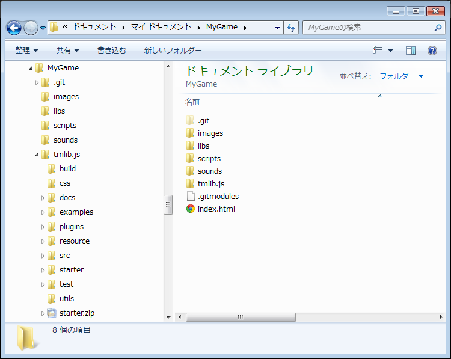

<!doctype html>
<html lang="en">

	<head>
		<meta charset="utf-8">

		<title>jsstg20150411</title>

		<meta name="description" content="A framework for easily creating beautiful presentations using HTML">
		<meta name="author" content="Hakim El Hattab">

		<meta name="apple-mobile-web-app-capable" content="yes" />
		<meta name="apple-mobile-web-app-status-bar-style" content="black-translucent" />

		<meta name="viewport" content="width=device-width, initial-scale=1.0, maximum-scale=1.0, user-scalable=no, minimal-ui">

		<link rel="stylesheet" href="css/reveal.css">
		<link rel="stylesheet" href="css/theme/black.css" id="theme">

		<!-- Code syntax highlighting -->
		<link rel="stylesheet" href="lib/css/zenburn.css">

		<!-- Printing and PDF exports -->
		<script>
			var link = document.createElement( 'link' );
			link.rel = 'stylesheet';
			link.type = 'text/css';
			link.href = window.location.search.match( /print-pdf/gi ) ? 'css/print/pdf.css' : 'css/print/paper.css';
			document.getElementsByTagName( 'head' )[0].appendChild( link );
		</script>

		<!--[if lt IE 9]>
		<script src="lib/js/html5shiv.js"></script>
		<![endif]-->
	</head>

	<body>

		<div class="reveal">

			<!-- Any section element inside of this container is displayed as a slide -->
			<div class="slides">
				<section data-markdown data-separator="^\n---\n$" data-separator-vertical="^\n--\n$">
					<script type="text/template">

## <span style="color:aqua">俺とtmlib.jsとGithub</span>

# &nbsp;

2015.5.30 tmlib.jsゆるふわ勉強会

daishi_hmr

---

## 自己紹介

* 名前：daishi_hmr
* 職業：プログラマー
* 趣味：<span style="color:pink">プリキュア</span>を応援すること
* tmlib.jsにバグ修正や機能追加のPRを送ったことあり

---

## 今日のお題

Github上でtmlib.jsに貢献する方法

※daishi_hmrのやり方

---

### <span style="color:red">step 1</span>
### tmlib.jsを使ったゲームを作ることを決意する

---

### <span style="color:red">step 2</span> 
### tmlib.jsをForkする

--

## Github上でForkしよう！


「Fork」ボタンを押すだけ！

--

## 自分のリポジトリが出来る！


---

### <span style="color:red">step 3</span> 
### プロジェクトの雛形を作る

--

## ソースやアセットを配置


--

## gitリポジトリを作成

```sh
$ git init
```


---

### <span style="color:red">step 4</span> 
### プロジェクトにtmlib.jsを追加

--

## gitのサブモジュールとしてtmlib.jsを追加

```sh
$ git submodule add https://github.com/daishihmr/tmlib.js.git
```



--

## tmlib.jsに自分のゲーム用のブランチを作る

```sh
$ cd tmlib.js
$ git checkout -b mygame
```


このゲームに使うライブラリはこのブランチからビルドする

--

## tmlib.jsをビルドし、プロジェクトに追加する

```sh
$ grunt
$ cp build/tmlib.js ../libs/
```


---

### <span style="color:red">step 5</span> 
### ゲーム開発開始！

--

# 魂の赴くままにゲームを作る！

--

### その中で……

--

## <span style="color:aqua">……あ、tmlib.jsのここバグってるや</span>

--

## <span style="color:aqua">……あ、こんな機能欲しいな</span>

--

## ……などといったことを思ったら

---

### <span style="color:red">step 6</span> 
### 新たにブランチを切ってtmlib.jsを修正

--

## featureブランチを作る

```sh
$ git checkout develop
$ git checkout -b feature/physics
```


<span style="color:red">featureブランチはdevelopブランチから分岐させる</span>

--

## 機能を追加 / バグを修正 してcommit


--

## 自分のブランチにmerge

```sh
$ git checkout mygame
$ git merge feature/physics
```


<span style="color:red">merge後もfeatureブランチは消さないこと！</span>

--

## ビルドしてゲームに使う

--

## 追加した機能にバグがあった場合

&nbsp;

1. featureブランチに戻って修正
1. ゲームブランチにmerge

---

### <span style="color:red">step 7</span> 
### ゲームを完成させる

--

### featureブランチがたくさん出来てるはず


--

### 使えそうなfeatureブランチをphiさんへプルリクしよう！


---

# まとめ

--

* 自分のゲームのために欲しい機能を作る
* ゲーム開発の中で機能をテストし、バグを取る
* 完成した段階で機能をtmlib.js本隊にマージしてもらう

---

### この方法の利点

* 確実に使い道がある機能が出来る
 * 少なくとも一人は使ってる！
* 実際に使うことで十分にテストできる

---

# みんなで育てようtmlib.js！

---

### ご清聴ありがとうございました

					</script>
				</section>
			</div>

		</div>

		<pre style="display:none"><code></code></pre>

		<script src="lib/js/head.min.js"></script>
		<script src="js/reveal.js"></script>

		<script>

			// Full list of configuration options available at:
			// https://github.com/hakimel/reveal.js#configuration
			Reveal.initialize({
				controls: true,
				progress: true,
				history: true,
				center: true,

				transition: 'concave', // none/fade/slide/convex/concave/zoom

				// Optional reveal.js plugins
				dependencies: [
					{ src: 'lib/js/classList.js', condition: function() { return !document.body.classList; } },
					{ src: 'plugin/markdown/marked.js', condition: function() { return !!document.querySelector( '[data-markdown]' ); } },
					{ src: 'plugin/markdown/markdown.js', condition: function() { return !!document.querySelector( '[data-markdown]' ); } },
					{ src: 'plugin/highlight/highlight.js', async: true, condition: function() { return !!document.querySelector( 'pre code' ); }, callback: function() { hljs.initHighlightingOnLoad(); } },
					{ src: 'plugin/zoom-js/zoom.js', async: true },
					{ src: 'plugin/notes/notes.js', async: true }
				]
			});

			setTimeout(function() {
				var links = document.querySelectorAll(".slides a");
				for (var i = 0; i < links.length; i++) {
					var link = links[i];
					link.setAttribute("target", "test");
				}
				console.log("ok");
			}, 2000);

		</script>

	</body>
</html>

<!--

http://blog-imgs-73.fc2.com/h/a/n/hanyachan/201404142016532a7.jpg
https://pbs.twimg.com/media/CB7DN5hUgAE7nxf.jpg:large
https://pbs.twimg.com/media/CB5osC0UAAAJaut.jpg:large
http://mitikao.sakura.ne.jp/jk/src/1300589246619.jpg
http://askz.sakura.ne.jp/column/cm111/f/r/b2/suite.jpg

-->